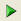
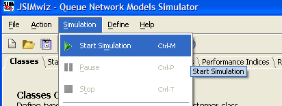
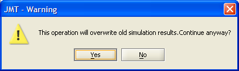
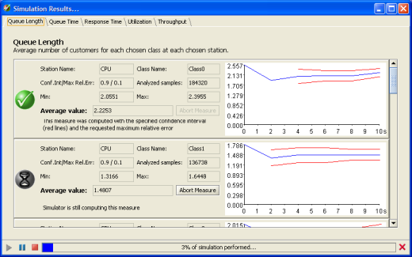

Start Simulation
__________
When a model is complete and the Simulation Parameters have been defined, you can start the simulation clicking the  button or selecting "Start Simulation" from the Simulation menu

If there are errors and/or potentially critical conditions, error and/or warning messages will appear, see Errors & warnings. In case of errors, the simulation may not start and errors must be corrected. In case of warnings, you can still start the simulation but the results may not be consistent.
If another simulation was executed before the current one, JSIM will warn you that previous simulation results will be overwritten if you continue. Click Yes if you do not care about previous results, click No if you wish to save previous results first and then restart the simulation.

After the simulation has started, the results window appears, with partial values. In particular, for each performance index and for each station the index has been selected, the current number of analyzed samples, the current average value and the graph of the latter are constantly updated.

An hourglass indicates that the computation of that index is not finished yet. A checkmark in a green bullet indicates that the computation of that index has successfully terminated. In this case, the minimum and maximum average are reported as well.
At the bottom of the result window are the simulation control buttons, namely the pause button (double bar), the start button (right pointing triangle), and the stop button (square). The status bar indicates the percentage of simulation executed so far, both graphically and numerically.